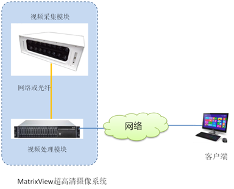
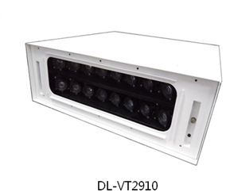
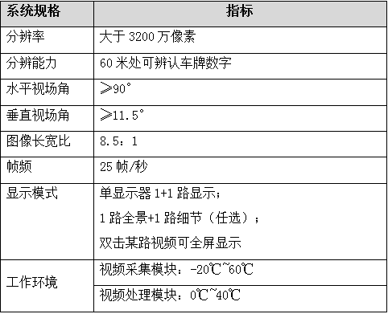
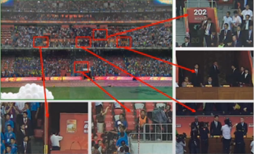
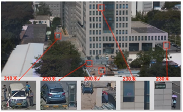

产品
安防集成管理平台
-
制高点监控专用 超高清摄像系统 MatrixView
产品介绍：
视频监控已经成为当前保障城市安全的重要基础设施，然而，随着城市规模日益发展扩大，城市环境越来越复杂，特别是超高层建筑等不断出现。当前常见的摄像机一般无论从安装高度、视野范围还是成像清晰度，均无法取得令人满意的效果。部分地区在城市高点安装大倍数光学变倍球机，但是在查看远端场景时，视角变得很小，也不利于进行大范围监控。
产品功能：
北京云逍遥网络科技有限公司（以下简称DLAX）针对制高点监控需求，推出了MatrixView超高清摄像系统，可以兼顾大范围场景监控及重点部位的精确监控。
DLAX MatrixView系统构成如下图所示：
如图所示：
DLAX MatrixView由前端视频采集模块和后端视频处理模块两部分构成：
视频采集模块DL-VT2910由多台摄像机构成阵列，每个镜头的光圈、焦距及角度均经过科学测算，这样使得采集的图像在后端视频处理模块进行处理时，降低性能开销，减少像素损失，同时具备更好的视频质量；
视频处理模块DL-VS6000负责多路视频的融合处理，形成超高分辨率的视频，在保障大视角、大场景的同时，兼顾细节的清晰度。
视频采集模块和视频处理模块之间可通过光纤直连，也可通过网络相连接。
DLAX MatrixView摄像系统的规格如下：
DLAX MatrixView系统特点：
- 视频覆盖范围超大，且视频无畸变，适合大场景监控；
- 超高清晰度，可兼顾细节监控；
 除了城市制高点应用外，由于DLAX MatrixView通过一个设备可实现传统监控系统需要多个摄像机才能覆盖的视野， 一点代替多点，且使用更直观更方便， 因此，MatrxiView 也非常适合其他需要大范围管控的场景，如城市广场、港口、景区、机场、火车站广场、景区、大型园区、水库等。
北京云逍遥网络科技有限公司
我们的理念：专业专注 用心服务 不求第一 但求满意
地址：北京市海淀区信息路30号上地大厦5层501室 电话：010-82874850 版权所有：2015-2025